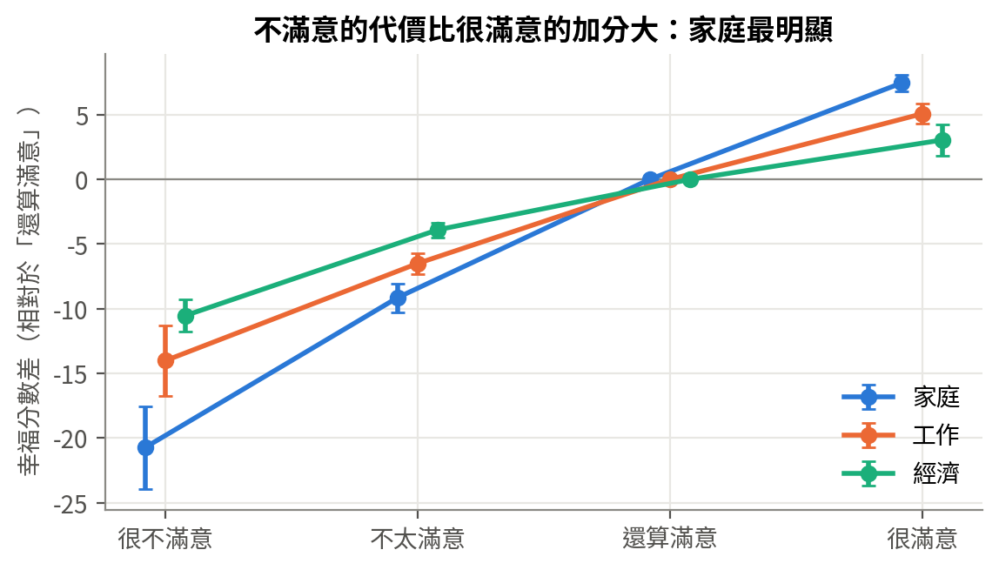
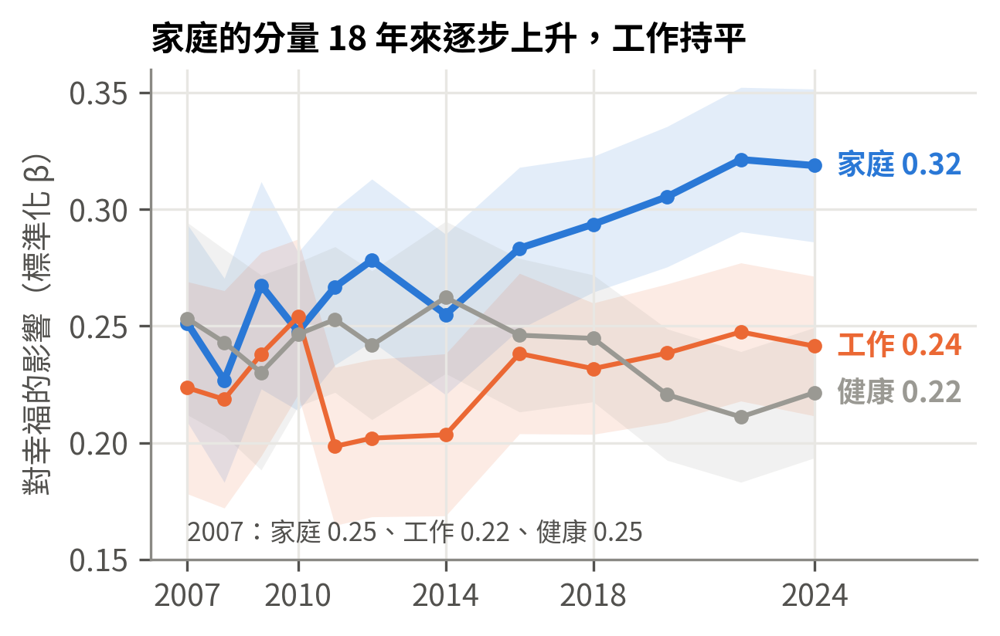
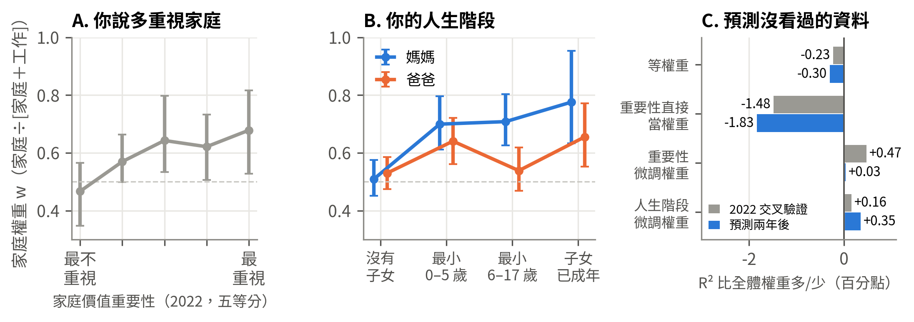
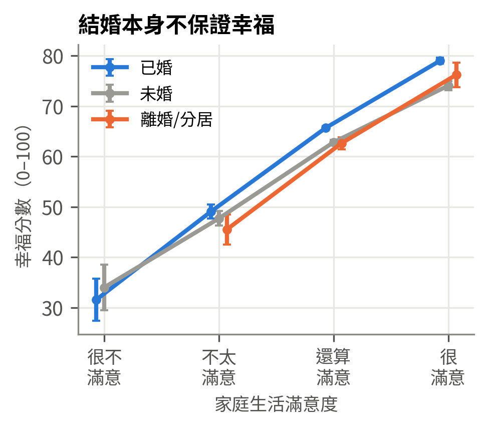

① 問題台灣人的幸福排名亞洲第一，卻工時長、生得少。幸福到底從哪裡來？
② 配方先拆解整體幸福：家庭占最大比重，而且 18 年來越來越重。
③ 假設平均配方之外，每個人重視的不同，所以每個人應該有自己的權重。
④ 實驗重要性、態度、分群都猜不到權重；同一個人的權重隔幾年就變。
⑤ 答案權重跟著人生階段走：有了孩子，家庭變重，母親尤其明顯。
台灣工時全球第五長、出生數屢創新低，幸福究竟從哪裡來？本研究使用家庭動態調查 2007–2024 年 12 波、8,672 人的追蹤資料，先拆解幸福的組成：家庭占最大比重（32%），而且 18 年來逐步加重。接著檢驗「每個人有自己的權重」的假設：五個實驗顯示，自評的重視程度幾乎預測不了個人權重，同一個人的權重隔幾年就會改變；真正改變配方的是人生階段，有了孩子後家庭權重明顯上升，母親尤其明顯。
家庭占配方的三成，健康、工作、經濟各約兩成。家庭生活「很不滿意」少 20.7 分，「很滿意」只多 7.5 分：避免最差比追求最好重要。
家庭滿意度對幸福的影響（標準化係數）從 2007 到 2024 年逐步上升，控制年齡後依然成立；工作大致持平。
重要性與態度題只能解釋個人權重差異的 1.5% 以下；同一個人的權重，隔幾年就不太一樣。
家庭權重（家庭 ÷［家庭＋工作］）：沒有小孩的女性 0.51，最小孩子 6–17 歲的媽媽 0.71；同階段的爸爸是 0.54。
台灣在《世界幸福報告 2025》排名全球第 27、亞洲第一（Helliwell et al., 2025），但台灣人的年總工時 2,030 小時、全球第五長（勞動部，2025）；2025 年出生數 107,812 人、結婚 104,376 對，都是歷史新低（內政部，2026）。當工作越來越長、家庭越來越晚成立，台灣人的幸福到底從哪裡來？
我們分兩步回答。第一步，拆解幸福的組成：把整體幸福看成各生活領域滿意度的組合（van Praag et al., 2003），看工作、家庭、經濟、健康各占多少、18 年來有沒有改變。第二步，檢驗我們自己的假設：華人的幸福觀特別重視家庭（Lu & Gilmour, 2004），但有人以家庭為重、有人以事業為重，所以每個人應該有自己的權重，先算出權重再乘上分數，應能更準確地描述幸福。心理學的「情感幅度假說」則預測相反：人對在乎的領域本來就給出較極端的滿意度，重要性早已藏在滿意度裡（Wu & Yao, 2006；Rohrer & Schmukle, 2018）。本研究回答三個問題：
| 題組（全樣本） | 07 | 08 | 09 | 10 | 11 | 12 | 14 | 16 | 18 | 20 | 22 | 24 | 角色 |
|---|---|---|---|---|---|---|---|---|---|---|---|---|---|
| 快樂、生活過得好不好 | 幸福 | ||||||||||||
| 工作、家庭滿意度、自評健康 | 領域分數 | ||||||||||||
| 經濟滿意度 | 領域分數 | ||||||||||||
| 情緒 6 題 | 幸福 | ||||||||||||
| 家庭價值重要性 8 題 | 重視程度 | ||||||||||||
| 婚姻態度、性別分工 | 重視程度 | ||||||||||||
| 職家衝突 | 機制 | ||||||||||||
| 子女名冊（人數、年齡） | 人生階段 |
■ 該波全樣本都有此題組；□ 僅用於再測信度。長期分析（18 年趨勢、個人權重的穩定度）用 12 波共 57,205 人次、8,672 人，同一人最多被訪 12 次；主模型用唯一同時具備完整幸福題與經濟滿意度的 RR2020–2024，共 16,856 人次、6,357 人（三波都受訪 4,842 人）。
資料整理：官方 25 個原始檔格式不一（8 個附 CSV、17 個只有 SPSS 檔，4 個中文亂碼），且同一題每年代號都不同。我們全部轉成 CSV、為每一年重建編碼簿，再寫成跨年對照表，逐一核對計分方向、遺漏值與選項代碼，並修正三個會直接影響結果的問題：(1) RR2024 編號改為 8 碼，需 ÷10 才能串接（原合併檔漏做，2022 與 2024 只對上 5 人）；(2) 子女變數由各波子女名冊重算（與直接題一致 96–99%）；(3) 婚姻態度題在 RR2022、2024 只訪問約 270、135 人，態度分析改用全樣本的 RR2020。
| 構念 | 題目 | 品質與依據 |
|---|---|---|
| 幸福指數（0–100） | 快樂（1–7）、生活過得好不好（1–7）、情緒 6 題（1–4），三面向各轉 0–100 後平均 | 依 OECD（2013）主觀福祉指引涵蓋「生活評價」與「情緒」；α = 0.78–0.82；18 年分析用前兩題（與完整版 r = 0.95） |
| 領域分數 | 工作、家庭生活、個人經濟滿意度（1–4）、自評健康（1–5） | 皆反轉為越大越好；與幸福題分開，避免以自己預測自己 |
| 重視程度 | 家庭價值重要性 8 題（RR2022）；家庭導向 9 題（RR2020） | α = 0.80、0.74；再測相關 0.56–0.65（是穩定的態度） |
工具與可重現性：Python 3（pandas、statsmodels、linearmodels、scikit-learn），從原始檔到圖表都寫成 Jupyter notebook，可從頭重跑；程式碼見 github.com/Andy0211112/pds2026（原始資料需向 SRDA 申請）。
在有工作的受訪者中（RR2020–2024，13,079 人次），四個領域的滿意度加上基本控制變數，可以解釋幸福分數 40% 的差異（R² = 0.40）。把這部分解釋力公平分給各領域，家庭分到 32%、健康 23%、工作 22%、經濟 20%（封面圖）。換成分數：家庭生活滿意度每高一級，幸福多 8.3 分（滿分 100）；工作 5.8 分、經濟 4.5 分、健康每好一級 5.1 分。
影響不是直線的：和「還算滿意」相比，家庭「很滿意」只多 7.5 分，「很不滿意」卻少 20.7 分，工作與經濟也是同樣的形狀（右圖）。避免最差的情況，比追求最好更重要。
這個順序（家庭 > 工作）在 16 種替代設定下全部成立，包括只用單一幸福題、面訪與網路自填分開、男女分開、各年分開；改用 ordered logit、改用已婚者的婚姻滿意度、或納入沒有工作的受訪者，結論都相同。


家庭滿意度的標準化係數從 2007 年的 0.25 升到 2024 年的 0.32，工作大致持平，健康反而下降。PSFD 追蹤同一批人，樣本會逐年變老，而年紀越大越重視親密關係（Carstensen et al., 1999）。我們確實發現年齡每多 10 歲，家庭係數 +0.027；但同時控制年齡後，年份趨勢仍是每 10 年 +0.046（p < 0.001），而且 40 歲以下、40–49、50–59、60 歲以上每個年齡層在 2020 年代都比 2007–2012 年高。原始斜率也從每級 9.1 分升到 10.6 分，所以不是量尺改變。
第一幕的答案很清楚：家庭是台灣上班族幸福最大的來源，而且越來越重。但這是「平均」的配方——每個人都一樣嗎？
我們的假設是：每個人重視工作與家庭的程度不同，所以每個人有自己的家庭權重 w。若這是真的，「說自己很重視家庭」的人家庭權重應該比較高，而且用每個人的權重預測幸福，應該比用全體權重更準。我們依序做了五個實驗，每一個的結果都決定了下一個要問什麼：
| 實驗 | 問的問題 | 結果 | 學到什麼 |
|---|---|---|---|
| ① 重要性直接當權重 | 照原構想，把「多重視家庭」直接當成 w，再乘上分數 | 預測力比資料估計的全體權重低 1.5 個百分點，比四個領域等權重還低（圖 C） | 失敗 說出口的重視不是權重 |
| ② 重要性 × 滿意度 | 越重視家庭，家庭的斜率是否越大？ | 同年略有效果（重要性第 10 → 第 90 百分位，w 從 0.47 升到 0.61；圖 A），但控制人生階段後不顯著（p = 0.08–0.13）；家庭導向態度、「丈夫養家」單題都不顯著；預測兩年後只多 0.03 個百分點 | 失敗 效果小又不穩 |
| ③ 分群與潛在類別 | 有沒有天生的「工作型」與「家庭型」？ | 讓 18 年資料自己把人分成 2–4 類，各類 w 只在 0.42–0.61；用態度猜一個人屬於哪類，AUC 0.48–0.56（0.5＝用猜的） | 失敗 沒有「工作型」的人 |
| ④ 每個人自己的斜率 | 不問態度，直接讓 6,018 人各有自己的工作、家庭斜率 | 個人差異確實存在（似然比檢定 p < 0.001）；但同一個人 2007–14 與 2016–24 兩段的權重相關只有 0.10（態度題是 0.56–0.65） | 轉折 權重存在，但會變 |
| ⑤ 人生階段 × 滿意度 | 那什麼能預測權重？ | 有子女：家庭斜率 +0.083、工作 −0.076（p < 0.01）；用 2022 預測 2024 時，人生階段是唯一仍明顯有幫助的個人化（圖 C） | 成立 答案是人生階段 |

一個看似矛盾的發現：結婚和生孩子對「平均幸福」的影響其實不大。已婚者比未婚者多 3.5 分，但其中 57% 經由「家庭生活滿不滿意」；同一個人結婚前後的幸福變化不顯著（+0.08 個標準差，p = 0.11）；有沒有孩子、孩子幾歲，平均幸福也沒有顯著差異。第一個孩子出生前幸福先升高、出生後回落，與德英追蹤研究的形狀相同（Myrskylä & Margolis, 2014）。那家庭的權重從哪裡來？
關鍵在於：權重看的是「家庭過得好不好」，不是「有沒有家庭」。婚姻、子女、收入、工時等客觀條件，只能解釋家庭滿意度的約一成；同樣已婚有孩子，有人家庭美滿，有人衝突不斷。右圖顯示，家庭生活很不滿意的已婚者並不比單身的人快樂，很滿意時則最快樂：結婚沒有把整條線往上移，而是讓線變陡。有了孩子也一樣，生活重心移到家庭，家庭好壞對幸福的牽動變大，權重上升；但順利時更幸福、不順時也傷得更重，平均起來與沒有孩子的人差不多。

家庭的 32% 也不全是「家庭讓人幸福」。同一個人自己跟自己比（個人固定效果），工作與家庭滿意度變好時，幸福都上升約 0.16 個標準差，一樣重；只有人與人之間比較時，家庭才明顯較大（0.28 vs 0.23），表示家庭好不好多半是長期狀態。交叉延宕也顯示，「這一波的幸福 → 下一波的家庭滿意度」（0.15）比反方向（0.10）更強：快樂的人也比較會覺得家庭很好，與工作滿意度的後設分析結果一致（Bowling et al., 2010）。因此本研究的「權重」應解讀為幸福與各領域一起變動的程度，而不是純粹的因果效果。
對個人的意義。與其問「要不要結婚、要不要生孩子」，不如問「家庭生活過得好不好」；而任何一個領域落到「很不滿意」的代價都很大，避免最差的情況比追求最好更划算。
對政策與職場的意義。有孩子的人，尤其是母親，幸福更依賴家庭；而在 RR2020、RR2024 的 8,057 人次中，控制工作與家庭滿意度後，職家衝突每高一個標準差，幸福仍再降 0.18 個標準差（Allen et al., 2000）。跨國研究發現，育兒假、彈性工時、托育等職家平衡政策越完整的國家，父母與非父母的幸福差距越小（Glass et al., 2016）。在少子化與長工時並存的台灣，減少職家衝突可能是同時照顧幸福與生育意願的切入點。
研究限制。(1) 觀察性資料，固定效果與交叉延宕只能排除部分混淆；(2) 主分析對象是有工作者，2020–2024 受訪者皆在 27 歲以上；(3) 未使用抽樣權數，結果描述的是 PSFD 樣本；(4) 面訪者傾向回報較高的家庭與經濟滿意度（Tu & Yu, 2026），我們控制填答方式並分開估計，結論不變；(5) 個人權重前後相關偏低，一部分可能來自測量誤差，但同樣有測量誤差的態度題前後相關高得多。
本研究使用資料係採自中央研究院人文社會科學研究中心調查研究專題中心「家庭動態調查」（RR2007–RR2024），由學術調查研究資料庫（SRDA）提供，謹致謝忱；以上作者與單位對本研究內容不負任何責任。本研究無接受經費補助，非源自學位論文或其他研究計畫。生成式 AI 使用揭露：本研究使用 Anthropic Claude 協助資料整理、程式撰寫與執行、文獻查找與文稿草擬；研究問題、分析決策與結論經團隊逐一檢核，團隊對內容負完全責任。
內政部（2026）。114 年人口統計：出生數、結婚對數（2026 年 1 月發布）。轉引自 AsiaNews（2026/01/12）。
勞動部（2025）。2024 年國際勞動統計：全年總工時。轉引自台灣英文新聞（2025/11/24）。
于若蓉（2026）。家庭動態調查：2024 追蹤問卷（RR2024）（C00411_1）【原始數據】。中央研究院人社中心調查研究專題中心學術調查研究資料庫。https://doi.org/10.6141/TW-SRDA-C00411_1-1（RR2007–RR2022 各期同此格式引用）
Allen, T. D., Herst, D. E. L., Bruck, C. S., & Sutton, M. (2000). Consequences associated with work-to-family conflict. Journal of Occupational Health Psychology, 5(2), 278–308.
Bowling, N. A., Eschleman, K. J., & Wang, Q. (2010). A meta-analytic examination of the relationship between job satisfaction and subjective well-being. Journal of Occupational and Organizational Psychology, 83(4), 915–934. https://doi.org/10.1348/096317909X478557
Carstensen, L. L., Isaacowitz, D. M., & Charles, S. T. (1999). Taking time seriously: A theory of socioemotional selectivity. American Psychologist, 54(3), 165–181.
Clark, A. E., Diener, E., Georgellis, Y., & Lucas, R. E. (2008). Lags and leads in life satisfaction: A test of the baseline hypothesis. The Economic Journal, 118(529), F222–F243.
DeSarbo, W. S., & Cron, W. L. (1988). A maximum likelihood methodology for clusterwise linear regression. Journal of Classification, 5, 249–282.
Ferrer-i-Carbonell, A., & Frijters, P. (2004). How important is methodology for the estimates of the determinants of happiness? The Economic Journal, 114(497), 641–659.
Friedman, J. H. (2001). Greedy function approximation: A gradient boosting machine. Annals of Statistics, 29(5), 1189–1232.
Glass, J., Simon, R. W., & Andersson, M. A. (2016). Parenthood and happiness: Effects of work-family reconciliation policies in 22 OECD countries. American Journal of Sociology, 122(3), 886–929.
Grömping, U. (2007). Estimators of relative importance in linear regression based on variance decomposition. The American Statistician, 61(2), 139–147.
Hamaker, E. L., Kuiper, R. M., & Grasman, R. P. P. P. (2015). A critique of the cross-lagged panel model. Psychological Methods, 20(1), 102–116.
Helliwell, J. F., et al. (Eds.) (2025). World Happiness Report 2025. Wellbeing Research Centre, University of Oxford.
Lu, L., & Gilmour, R. (2004). Culture and conceptions of happiness: Individual oriented and social oriented SWB. Journal of Happiness Studies, 5(3), 269–291.
Myrskylä, M., & Margolis, R. (2014). Happiness: Before and after the kids. Demography, 51(5), 1843–1866.
OECD (2013). OECD Guidelines on Measuring Subjective Well-being. OECD Publishing.（2025 年更新版）
Raudenbush, S. W., & Bryk, A. S. (2002). Hierarchical Linear Models (2nd ed.). Sage.
Rohrer, J. M., & Schmukle, S. C. (2018). Individual importance weighting of domain satisfaction ratings does not increase validity. Collabra: Psychology, 4(1), 6.
Tu, S.-H., & Yu, R.-R. (2026). Respondent characteristics' moderating effect on mixed-mode effects: An example of subjective well-being measurements. International Journal of Social Research Methodology, 29(1), 95–105. https://doi.org/10.1080/13645579.2025.2483771
van Praag, B. M. S., Frijters, P., & Ferrer-i-Carbonell, A. (2003). The anatomy of subjective well-being. Journal of Economic Behavior & Organization, 51(1), 29–49.
Wu, C.-H., & Yao, G. (2006). Do we need to weight item satisfaction by item importance? A perspective from Locke's range-of-affect hypothesis. Social Indicators Research, 79(3), 485–502.